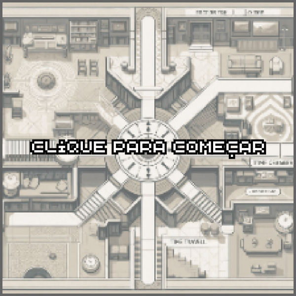

Sinopse
Visão geral
Nosso projeto de hipermídia consiste em um site interativo, onde as pessoas, através de pequenos vídeos poderão acompanhar a história de três amigos que a partir de um jogo viajam no tempo.
Essa proposta surgiu através da leitura do livro “O jardim de veredas que se bifurcam” e uma discussão em grupo de como o conceito de subjetividade poderia ser aplicado, junto ao uso da tecnologia, então pensamos nessa espécie de história interativa e subjetiva, através dessa história queremos trazer a tona temas de nosso interesse como casais homoafetivos, problemas familiares e amizade.
Proposta artística
Nosso filme conta com traços do cinema expandido digitalmente. Com o uso da programação, faremos um site que interage diretamente com o filme e o espectador, dando a oportunidade dele seguir sua própria história.
A proposta artística em questão se leva por uma estética "retrô", com uso de cores escuras como o marrom, verde e azul. As personagens equilibram o filme com os tempos atuais, utilizando roupas marcantes e distintas entre si. Figurinos que ressaltam a essência de cada um. Também utilizando alguns estereótipos básicos que retratam a sexualidade das personagens.
A arte do filme põe em pauta a discussão sobre como as pessoas se expressam perante suas roupas, e como o ambiente pode refletir em quem somos e nos tornamos. O "retrô" da casa em pleno 2023, também representa um jogo no tempo, quase como um portal temporal, que de certa forma se torna uma mensagem sobre a viagem no tempo abordada no curta.
Roteiro do Site
Ao ingressar no site, o espectador terá a visão e escolha do que gostaria de visualizar primeiro, a história em si, a bíblia dos personagens, make off e construção do projeto. Será uma página de rolagem única, onde durante toda a página será acompanhado por um mapa animado, mapa esse que remete ao mapa que desenvolvemos para o jogo.
A história será um curta, dividido em fragmentos e que dará ao espectador a escolha de que caminho seguir e assim de como ele vai interpretar a história.
Jogo - Vira-Tempo


Personagens
Extras
Make off
Construção do Projeto
Créditos
Direção
Mariana Rainha de Morais
Produção
Ana Clara Carvalho Paseli
Assistente de direção
Rafaela Barana Chagas
Fotografia
Rafaela Camargo Dias
Direção de Arte
Clara Luz de Siqueira Carvalho Sene Coelho
Continuísta
Ana Luiza Freitas Sousa
Som
Blue Oliveira Souza Silva
Roteiro
Blue Oliveira Souza Silva
Mariana Rainha
Programador Web
Lucca Rosa Soares de Souza